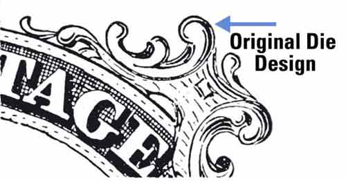

Government Reprint Issue of 1875, Plating Mark Schematic The original stamps 1¢ Franklin Issues of 1851-57 were made by Toppan, Carpenter, Casilear & Company of Philadelphia. The reprint issue of 1875 discussed here was manufactured by the Continental Banknote Company. |
The only Full Plate of Type I. When the government printing offices decided to make these reprints, a new plate was made and the originally intended design from the 1851 issue finally made it's debut. Almost..... Secret Mark. All 1¢ stamps from the reprint plate have a secret mark in the shape of a heavy dot placed in the wide white border surrounding the Franklin portrait. This secret mark first appeared on 1¢ stamps from plate 11 and plate 12. No stamps from any other plates show this dot. As stamps from plates 11 and 12 were perforated, this dot is not found on any imperforated stamps or, stamps from plate 1 early claiming to be Type 1. Some Other Small Design Differences. According to Neinken, the design of the Type I stamps of the reprint plate differ to a small degree from the design of the original die. On the reprint plate the outer left line of the top right ornament is missing. On the plate proof that I photographed and show in the archive, I have found that most positions on the plate do not completely lack this line as indicated in the Ashbrook ink drawing. This may be due to the fact that the stamp paper used was stiffer or harder and the ink just didn't transfer to the paper or, that the India paper is softer and did impress an image. Either way, this plate does have metal representing the line and the ink line does show on almost all the positions, some fainter that others. Neinken also states that the bottom line of the ball of the lower left scroll is missing. This can clearly be seen under magnification. See figures 2 through 7 below. Surface Cracks. Refer to the Plating Mark and Scratch Schematic to the left. The numbers on the schematic indicate what position on the plate reveals these marks. Position 42 shows several very fine surface cracks. Position 51 shows another fine surface crack to the left side of the design. The finest cracked plate variety occurs on Position 91. This major crack extends from the bottom part of the right ball of the right scroll and into the lower margin. This crack extends almost to the bottom edge of the plate. Almost all of the positions show various plating marks and the more prominent ones are shown on the schematic below. |
| Double Transfer. The Scott Specialized Catalog lists under Scott 40 a "Double Transfer." This refers to Position 94. The doubling can be seen at the bottom of the design, in the scrolls and the left full curve, but isn't as noticeable in the right full curve. Guide Dots. The majority of the remaining 90 positions only have one guide dot at the intersection of the guide lines, but certain positions have 2 and others, 3 or 4. In most cases the extra dots are much smaller that the regular guide dot. Relief Dash. Fine Scratches. |
| Figure 2. Below. Showing the original die design of the 1851  |
| Figure 3. Below. Showing the reprint die design of the 1875 |
| Figure 4. Below. The actual reprint proof showing evidence of the curved line still present. A guide dot can also clearly be seen. |
| Figure 5. Below. Showing the original die design of the 1851. |
| Figure 6. Below. Showing the reprint die design of the 1875. |
| Figure 7. Below. Showing the reprint die design of the 1875. The dent in the left plume and missing line in the left scroll ball can clearly be seen. |
DISCLAIMER and COPYRIGHT INFORMATION: Thanks for visiting this site. I hope you learn something new as we are making new discoveries all the time. You, the visitor, have my permission to link to my pages and to share the INFORMATION with others. The images themselves fall under the fair use guidelines established by the United States Congress and Copyright law. Basically contact us before using. I also ask in return that you send me an e-mail if I have made a mistake, or have made some other technical blunder that in my rush to put these pages up would cause the visitor confusion. Please also visit my other website at www.slingshotvenus.com. and support the live music arts. While your there, be sure to purchase our music. There are not many philatelic rock stars around and we need all the help we can get. :-) I can be reached at: nerdman@ix.netcom.com Update 1/2/07 |